Last updated: 2021-06-03
Checks: 6 1
Knit directory: apis_retinue_expt/
This reproducible R Markdown analysis was created with workflowr (version 1.6.2). The Checks tab describes the reproducibility checks that were applied when the results were created. The Past versions tab lists the development history.
The R Markdown is untracked by Git. To know which version of the R Markdown file created these results, you’ll want to first commit it to the Git repo. If you’re still working on the analysis, you can ignore this warning. When you’re finished, you can run wflow_publish to commit the R Markdown file and build the HTML.
Great job! The global environment was empty. Objects defined in the global environment can affect the analysis in your R Markdown file in unknown ways. For reproduciblity it’s best to always run the code in an empty environment.
The command set.seed(20190828) was run prior to running the code in the R Markdown file. Setting a seed ensures that any results that rely on randomness, e.g. subsampling or permutations, are reproducible.
Great job! Recording the operating system, R version, and package versions is critical for reproducibility.
Nice! There were no cached chunks for this analysis, so you can be confident that you successfully produced the results during this run.
Great job! Using relative paths to the files within your workflowr project makes it easier to run your code on other machines.
Great! You are using Git for version control. Tracking code development and connecting the code version to the results is critical for reproducibility.
The results in this page were generated with repository version 262e450. See the Past versions tab to see a history of the changes made to the R Markdown and HTML files.
Note that you need to be careful to ensure that all relevant files for the analysis have been committed to Git prior to generating the results (you can use wflow_publish or wflow_git_commit). workflowr only checks the R Markdown file, but you know if there are other scripts or data files that it depends on. Below is the status of the Git repository when the results were generated:
Ignored files:
Ignored: .DS_Store
Ignored: .Rhistory
Ignored: .Rproj.user/
Ignored: Figures and tables.docx
Ignored: data/.DS_Store
Ignored: data/behaviour_data_OLDER_VERSION.csv
Ignored: data/raw_blinded_behaviour_data_OLD_VERSION.csv
Ignored: output/duration_model.rds
Ignored: output/model_comparison_table_count_brms.rds
Ignored: output/model_comparison_table_duration_brms.rds
Ignored: output/model_selection_table.rds
Ignored: output/model_selection_table_count_glmmTMB.rds
Ignored: output/model_selection_table_duration_glmmTMB.rds
Ignored: output/model_weights_random_slope.rds
Ignored: output/multivariate_brms.rds
Ignored: output/pre_reg_model.rds
Ignored: output/top_10_model_formulae_count.rds
Ignored: output/top_10_model_formulae_duration.rds
Ignored: pheromone paper draft.docx
Untracked files:
Untracked: analysis/2021_stats.Rmd
Untracked: data/blinded_behaviour_data.csv
Untracked: figures/
Unstaged changes:
Modified: analysis/_site.yml
Modified: analysis/clean_raw_data.Rmd
Modified: analysis/statistics.Rmd
Modified: data/data_for_each_group_bees.csv
Modified: data/raw_blinded_behaviour_data.csv
Modified: data/unblinded_behaviour_data.csv
Note that any generated files, e.g. HTML, png, CSS, etc., are not included in this status report because it is ok for generated content to have uncommitted changes.
There are no past versions. Publish this analysis with wflow_publish() to start tracking its development.
# However it was slightly tricky to install the showtext package. On Mac, I did this:
# installed 'homebrew' using Terminal: ruby -e "$(curl -fsSL https://raw.githubusercontent.com/Homebrew/install/master/install)"
# installed 'libpng' using Terminal: brew install libpng
# installed 'showtext' in R using: devtools::install_github("yixuan/showtext")
library(showtext)
library(tidyverse)
library(ggbeeswarm)
library(tidybayes)
library(brms)
library(gridExtra)
library(kableExtra)
library(bayestestR)
library(knitrhooks) # install with devtools::install_github("nathaneastwood/knitrhooks")
library(showtext)
library(ggrepel)
library(cowplot)
output_max_height() # a knitrhook option
options(stringsAsFactors = FALSE)
# set up nice font for figures
nice_font <- "Raleway"
font_add_google(name = nice_font, family = nice_font, regular.wt = 400, bold.wt = 700)
showtext_auto()
# Here are the treatments, ranked roughly from least to most like a queen bee
treatment_levels <-
# two "controls"
c("Solvent control", "10-HDA (worker control)",
# 4 individual queen-type chemicals
"HOB", "HVA", "9-HDA", "9-ODA",
# 6 pairwise combinations of two of the queen-type chemicals
"HOB and HVA",
"9-HDA and HOB", "9-HDA and HVA",
"9-ODA and HOB", "9-ODA and HVA", "9-ODA and 9-HDA")
levels_ampersand <- str_replace_all(treatment_levels, "and", "&")
# Load the behaviour data and rename the variables as in the pre-registration
# Also put the pheromone treatment levels in a biologically sensible order (not alphabetical)
behaviour_data <- read.csv("data/unblinded_behaviour_data.csv") %>%
as_tibble() %>%
rename(block = tray,
hive = hive) %>%
mutate(treatment = factor(treatment, levels = treatment_levels))
# Finally, count up the number of times the bees in each dish touched the filter paper,
# so that we now have 1 observation for each Petri dish (number of touches in 30 minute-observation period)
data_by_petri_dish <- behaviour_data %>%
group_by(treatment, block, hive, dish) %>%
summarise(n_touches = length(touch_duration),
duration_touches = sum(touch_duration) + 1, # +1 is for the log10 analyses
.groups = "drop") %>%
ungroup() %>%
arrange(treatment, hive, block) These plots show the means \(\pm\) SE (top) or the individual data points with boxplots for each group of bees (bottom). The left plots show the number of times bees made contact with the pheromone lure in 30 minutes, while the right plots show the total duration the bees were in contact with the lure.
raw_to_plot <- data_by_petri_dish %>%
mutate(treatment = str_replace_all(treatment, "and", "&"),
treatment = factor(treatment, levels_ampersand))
p1 <- raw_to_plot %>%
group_by(treatment) %>%
summarise(mean = mean(n_touches),
SE = sd(n_touches) / sqrt(n()),
.groups = "drop") %>%
mutate(treatment = factor(treatment, rev(treatment))) %>%
ggplot(aes(treatment, mean, fill = treatment)) +
geom_errorbar(aes(ymin = mean-SE, ymax = mean+SE), width = 0.2) +
geom_bar(stat="identity", colour = "black") + coord_flip() +
xlab("Treatment") +
ylab("Mean \u00B1 SE number of contacts") +
theme(legend.position = "none",
text = element_text(family = nice_font))
p2 <- raw_to_plot %>%
group_by(treatment) %>%
summarise(mean = mean(duration_touches),
SE = sd(duration_touches) / sqrt(n()),
.groups = "drop") %>%
mutate(treatment = factor(treatment, rev(treatment))) %>%
ggplot(aes(treatment, mean, fill = treatment)) +
geom_errorbar(aes(ymin = mean-SE, ymax=mean+SE), width = 0.2) +
geom_bar(stat="identity", colour = "black") + coord_flip() +
xlab(NULL) +
ylab("Mean \u00B1 SE total duration of contact (s)") +
theme(legend.position = "none",
axis.text.y = element_blank(),
axis.ticks.y = element_blank(),
text = element_text(family = nice_font))
p3 <- raw_to_plot %>%
mutate(treatment = factor(treatment, rev(levels(treatment)))) %>%
ggplot(aes(treatment, n_touches, colour = treatment)) +
geom_beeswarm(alpha = .7) +
geom_boxplot(fill = NA, colour = "black", size = 0.3, outlier.shape = NA) +
coord_flip() +
ylab("Number of contacts") +
xlab("Treatment") +
theme(legend.position = "none",
text = element_text(family = nice_font))
p4 <- raw_to_plot %>%
mutate(treatment = factor(treatment, rev(levels(treatment)))) %>%
ggplot(aes(treatment, duration_touches, colour = treatment)) +
geom_beeswarm(alpha = .7) +
geom_boxplot(fill = NA, colour = "black", size = 0.3, outlier.shape = NA) +
coord_flip() +
#scale_y_log10() +
ylab("Total duration of contact") +
xlab(NULL) +
theme(legend.position = "none",
axis.text.y = element_blank(),
axis.ticks.y = element_blank(),
text = element_text(family = nice_font))
plot(rbind(cbind(ggplotGrob(p1), ggplotGrob(p2), size = "last"),
cbind(ggplotGrob(p3), ggplotGrob(p4), size = "last")))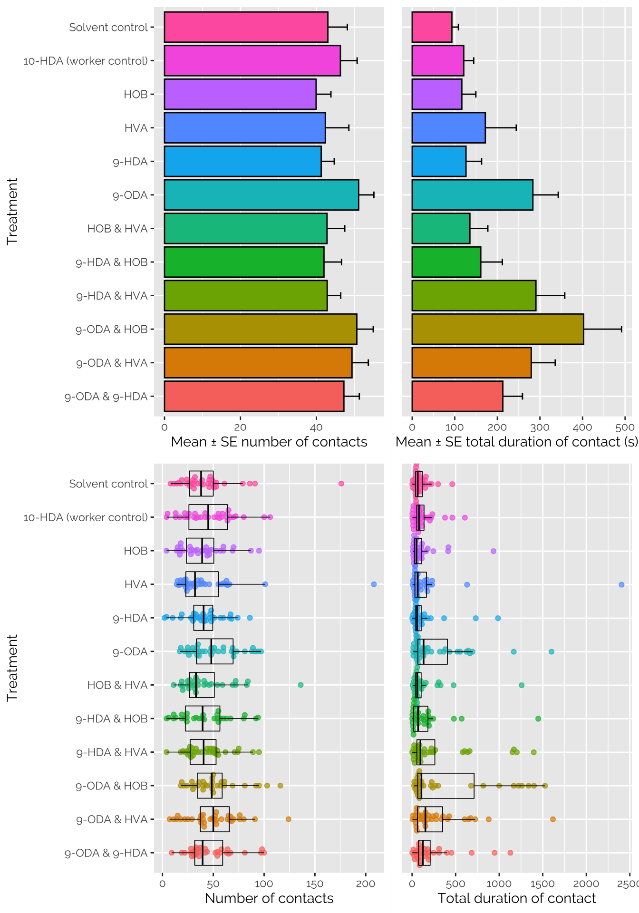
In this section (i.e. Analysis of the number of contacts in 30 minutes), we carry out the pre-planned analysis, focusing on the response variable that was mentioned in the pre-registration, namely “the number of antennal contacts between workers and the pheromone-treated paper that occur over 30 minutes” (represented in this R Markdown document by the variable data_by_petri_dish$n_touches).
To recap, the pre-registered plan for this study can be found at https://osf.io/ncf9z/, and the relevant part is quoted here:
We will conduct two separate analyses, one for the behavioural data and one for the ovary dissection data. The analyses will use generalised linear mixed models (GLMM) be implemented using the R package brms, using one of the following two model formulas (in the syntax of brms): Model 1:
Response_variable ~ Pheromone_treatment + (1 | Block) + (1 | Hive)or Model 2:Response_variable ~ Pheromone_treatment + (1 | Block) + (Pheromone_treatment | Hive)WherePheromone_treatmentis a 12-level fixed factor. Model 1 fits hive as a random intercept, which constrains all the hives to show the same response to queen pheromone, while the latter allows for a variable response between hives by additionally including treatment as a random slope. We will use cross-validation to determine which of these models provides a better fit, and then use that in subsequent analyses. The behavioural data represent counts of events, and so will probably be analysed using a GLMM with Poisson errors (or perhaps zero-inflated Poisson or negative binomial – to be decided based on which one provides the best fit, according to posterior predictive checks).
In the next section (Analysis of touch duration), we use the same statistical methods to analyse the other response variable, namely the total duration that bees were in contact with the lure over the 30-minute observation period (measured in “bee seconds”; represented in this document by the variable data_by_petri_dish$duration_touches). As the plot above suggests, the differences between treatments are larger for the duration_touches response variable than for n_touches though the results are qualitatively similar.
n_touchesThe response variable does not look zero-inflated (as we speculated in the pre-registration), though the right tail seems longer than expected for a Poisson-distributed random variable. Therefore, it seems appropriate to select the negative binomial distribution, which has an additional free parameter for the variance, and so should provide a better fit to the data.
ggplot(data_by_petri_dish, aes(n_touches)) +
geom_histogram(bins = 50, colour = "grey20", fill = "#f69256") +
xlab("Number of contacts with lure")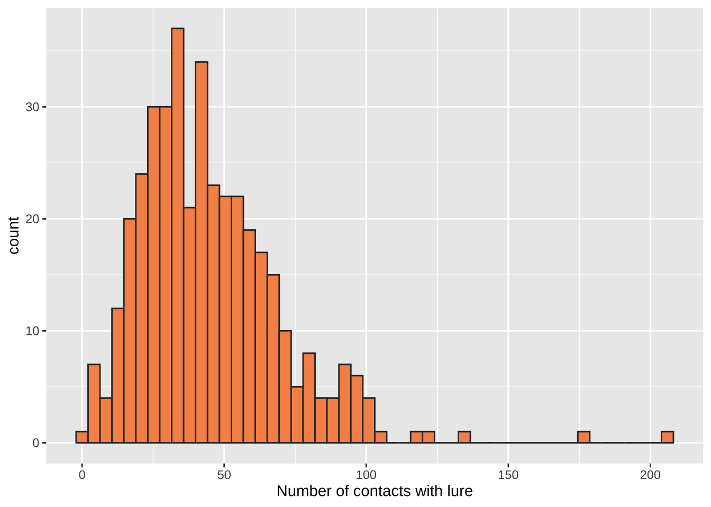
brmsHere, we run the models as stated in the pre-registration.
if(!file.exists("output/pre_reg_model.rds")){
priors <- c(prior(normal(0, 3), class = b))
pre_reg_model <- brm(
formula = n_touches ~ treatment + (1 | block) + (1 | hive),
family = "negbinomial",
chains = 4, cores = 1, iter = 8000,
control = list(adapt_delta = 0.9999, max_treedepth = 14),
prior = priors,
data = data_by_petri_dish)
saveRDS(pre_reg_model, file = "output/pre_reg_model.rds")
pre_reg_with_random_slope <- brm(
formula = n_touches ~ treatment + (1 | block) + (treatment | hive),
family = "negbinomial",
sample_prior = TRUE,
chains = 4, cores = 1, iter = 8000,
control = list(adapt_delta = 0.9999, max_treedepth = 14),
prior = priors,
data = data_by_petri_dish)
model_weights_random_slope <- model_weights(pre_reg_model, pre_reg_with_random_slope, weights = "loo")
saveRDS(model_weights_random_slope, "output/model_weights_random_slope.rds")
} else {
pre_reg_model <- readRDS("output/pre_reg_model.rds")
model_weights_random_slope <- readRDS("output/model_weights_random_slope.rds")
}The model formula named “Model 1” in the pre-registration had a better fit than the one named Model 2; that is, there was no evidence for variance in the response to treatment between hives. The model weight of Model 1 was >99.999% (computed using “LOO”, or leave-one-out cross validation), indicating strong support for Model 1 over Model 2.
model_weights_random_slope pre_reg_model pre_reg_with_random_slope
9.999398e-01 6.021066e-05
We first perform a “posterior predictive check” on the model. The thick line shows the distribution of the real data, and the 10 thin blue lines show the distribution of fitted values for 10 random draws from the posterior. The fitted values follow the original data quite well, which is a necessary condition for a model to produce reliable inferences.
pp_check(pre_reg_model, nsamples = 10) +
labs(y = "Density", x = "Number of contacts with pheromone lure")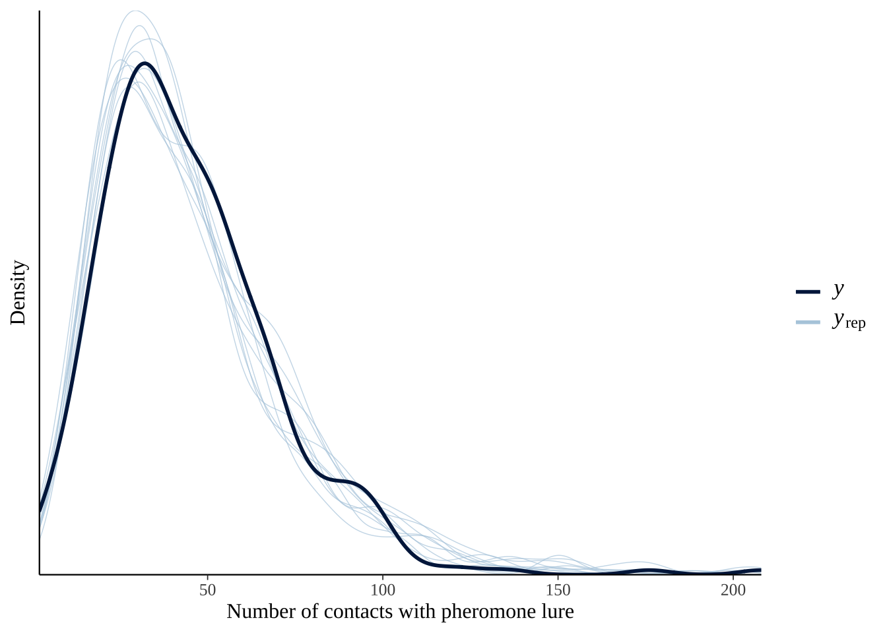
brmsHere is the complete output from the summary() method for brms.
summary(pre_reg_model) Family: negbinomial
Links: mu = log; shape = identity
Formula: n_touches ~ treatment + (1 | block) + (1 | hive)
Data: summary_data (Number of observations: 392)
Samples: 4 chains, each with iter = 8000; warmup = 4000; thin = 1;
total post-warmup samples = 16000
Group-Level Effects:
~block (Number of levels: 35)
Estimate Est.Error l-95% CI u-95% CI Rhat Bulk_ESS Tail_ESS
sd(Intercept) 0.28 0.05 0.20 0.38 1.00 4381 7055
~hive (Number of levels: 3)
Estimate Est.Error l-95% CI u-95% CI Rhat Bulk_ESS Tail_ESS
sd(Intercept) 0.68 0.66 0.14 2.50 1.00 3577 5659
Population-Level Effects:
Estimate Est.Error l-95% CI u-95% CI Rhat Bulk_ESS
Intercept 3.71 0.49 2.75 4.79 1.00 3932
treatment10MHDAworkercontrol 0.07 0.11 -0.14 0.29 1.00 4698
treatmentHOB -0.07 0.11 -0.28 0.15 1.00 4682
treatmentHVA -0.03 0.11 -0.25 0.18 1.00 4593
treatment9MHDA 0.02 0.11 -0.20 0.23 1.00 4583
treatment9MODA 0.21 0.11 0.00 0.42 1.00 4414
treatmentHOBandHVA -0.01 0.11 -0.22 0.21 1.00 4824
treatment9MHDAandHOB -0.05 0.11 -0.27 0.17 1.00 4772
treatment9MHDAandHVA 0.02 0.11 -0.19 0.23 1.00 4382
treatment9MODAandHOB 0.19 0.11 -0.02 0.41 1.00 4527
treatment9MODAandHVA 0.16 0.11 -0.05 0.37 1.00 4617
treatment9MODAand9MHDA 0.15 0.11 -0.07 0.36 1.00 4717
Tail_ESS
Intercept 4204
treatment10MHDAworkercontrol 8562
treatmentHOB 7782
treatmentHVA 8063
treatment9MHDA 7048
treatment9MODA 7512
treatmentHOBandHVA 8578
treatment9MHDAandHOB 7684
treatment9MHDAandHVA 8191
treatment9MODAandHOB 7579
treatment9MODAandHVA 8409
treatment9MODAand9MHDA 7988
Family Specific Parameters:
Estimate Est.Error l-95% CI u-95% CI Rhat Bulk_ESS Tail_ESS
shape 5.86 0.51 4.91 6.90 1.00 15498 12150
Samples were drawn using sampling(NUTS). For each parameter, Bulk_ESS
and Tail_ESS are effective sample size measures, and Rhat is the potential
scale reduction factor on split chains (at convergence, Rhat = 1).
Table SXXX: Treatment effects on the number of contacts with pheromone lure observed in 30 minutes. The table shows the fixed effects parameter estimates from a Bayesian mixed model with negative binomial errors, and hive and experimental block as random effects. Columns 2-5 show the median, error, and 95% credible intervals of the posterior distribution, while the p column shows 1 minus the “probability of direction” (i.e. the probability that the true effect size has the same sign as the estimated effect size).
pvalues <- as.data.frame(p_direction(pre_reg_model)) %>%
mutate(Parameter = str_remove_all(Parameter, "b_"),
Parameter = str_replace_all(Parameter, "[.]", ":"),
p = 1- pd) %>% select(Parameter, p) %>% distinct()
fixed_effects <- fixef(pre_reg_model) %>%
as.data.frame() %>%
rownames_to_column("Parameter") %>%
mutate(old_names = Parameter) %>%
left_join(pvalues, by = "Parameter") %>%
mutate(` ` = ifelse(p < 0.05, "\\*", ""),
` ` = replace(` `, p > 0.05 & p < 0.1, "~"),
` ` = replace(` `, p < 0.01, "**"),
` ` = replace(` `, p < 0.001, "***"),
Parameter = str_replace_all(Parameter, "Pheromone_treatment", ""),
Parameter = str_replace_all(Parameter, "M", "-"),
Parameter = str_replace_all(Parameter, "and", " and "),
Parameter = str_replace_all(Parameter, "workercontrol", " (worker control)"),
Parameter = str_replace_all(Parameter, "treatment", "Treatment: ")) %>%
mutate_at(vars(-Parameter, - ` `, - old_names), ~ round(.x, 3))
fixed_effects %>% select(-old_names) %>%
mutate(Parameter = str_replace_all(Parameter, "and", "&")) %>%
kable() %>% kable_styling(full_width = FALSE)| Parameter | Estimate | Est.Error | Q2.5 | Q97.5 | p | |
|---|---|---|---|---|---|---|
| Intercept | 3.707 | 0.488 | 2.748 | 4.794 | 0.000 | *** |
| Treatment: 10-HDA (worker control) | 0.072 | 0.109 | -0.139 | 0.287 | 0.254 | |
| Treatment: HOB | -0.070 | 0.111 | -0.284 | 0.150 | 0.263 | |
| Treatment: HVA | -0.033 | 0.108 | -0.246 | 0.180 | 0.377 | |
| Treatment: 9-HDA | 0.016 | 0.110 | -0.200 | 0.229 | 0.447 | |
| Treatment: 9-ODA | 0.210 | 0.106 | 0.000 | 0.418 | 0.025 | * |
| Treatment: HOB & HVA | -0.005 | 0.111 | -0.222 | 0.215 | 0.477 | |
| Treatment: 9-HDA & HOB | -0.051 | 0.111 | -0.268 | 0.168 | 0.319 | |
| Treatment: 9-HDA & HVA | 0.018 | 0.108 | -0.194 | 0.229 | 0.433 | |
| Treatment: 9-ODA & HOB | 0.191 | 0.110 | -0.023 | 0.406 | 0.039 | * |
| Treatment: 9-ODA & HVA | 0.164 | 0.107 | -0.046 | 0.373 | 0.061 | ~ |
| Treatment: 9-ODA & 9-HDA | 0.146 | 0.110 | -0.068 | 0.360 | 0.092 | ~ |
plot_model <- function(model){
posterior_samples(model) %>%
as_tibble() %>%
select(contains("b_"), -contains("Intercept")) %>%
gather() %>%
mutate(key = str_remove_all(key, "b_")) %>%
left_join(fixed_effects %>% select(Parameter, old_names), by = c("key" = "old_names")) %>%
mutate(Parameter = str_replace_all(Parameter, "Treatment: ", "")) %>%
mutate(Parameter = str_replace_all(Parameter, "and", "&")) %>%
mutate(Parameter = factor(Parameter, rev(levels_ampersand))) %>%
filter(!is.na(Parameter)) %>%
ggplot(aes(value, Parameter, fill = Parameter)) +
geom_vline(xintercept = 0, linetype = 2) +
stat_halfeyeh(alpha = 0.8) +
scale_fill_viridis_d() +
theme_bw() +
theme(legend.position = "none",
text = element_text(family = nice_font)) +
ylab("Pheromone treatment") +
xlab("Effect of chemical on number of contacts\n(relative to the solvent-only control)")
}
pre_reg_model %>% plot_model()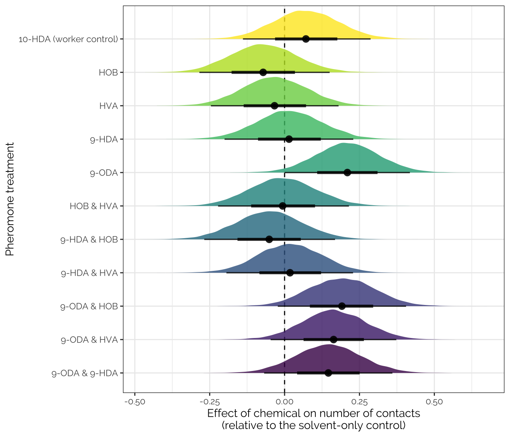
Figure S1: The figure shows the posterior distribution for each chemical’s effect size, from the pre-registered model shown in Table SXX. The solvent-only control was used as the reference level, meaning that positive effect sizes indicate that the focal chemical received more contacts from worker bees than the solvent-only control, and negative effect sizes mean it received fewer contacts. Note that there is some evidence that the true effect size is positive for the four treatments containing 9-ODA, though there is no evidence that pairs of chemicals had synergistic effects.
We also wrote the following in the pre-registered plan for the analysis:
Firstly, we will calculate pairwise differences in means between all the 12 treatments, similar to post hoc testing in the frequentist framework. For example, we might find that the mean number of contacts with the pheromone lure was significantly higher in the 9-ODA treatment relative to the solvent control
Here, we calculate the posterior estimates for the mean number of inspections of the pheromone lure for each of the 12 treatments, and then find the difference in means between various pairs of treatments. For example, we compare each of the 11 treatments to the solvent-only control, and compare each of the two-component mixtures to the individual chemicals they contain. In the graph below, the y-axis includes a minus sign (−) to illustrate the direction of the comparison, e.g. positive values for the first variable (9-ODA & HOB − HOB) indicate the mixture of 9-ODA & HOB had a higher number of inspections than HOB alone.
new <- data_by_petri_dish %>%
select(treatment) %>% distinct() %>%
arrange(treatment) %>%
mutate(para = paste("V", 1:n(), sep = ""))
contrasts_n_touches <- as.data.frame(fitted(pre_reg_model, newdata = new,
re_formula = NA, summary = FALSE)) %>%
mutate(draw = 1:n()) %>%
as_tibble() %>%
gather(para, n_touches, -draw) %>%
left_join(new, by = "para") %>%
select(draw, treatment, n_touches) %>%
spread(treatment, n_touches) %>%
mutate(
`HOB & HVA − HOB` = `HOB and HVA` - HOB,
`HOB & HVA − HVA` = `HOB and HVA` - HVA,
`9-HDA & HOB − 9-HDA` = `9-HDA and HOB` - `9-HDA`,
`9-HDA & HOB − HOB` = `9-HDA and HOB` - HOB,
`9-HDA & HVA − 9-HDA` = `9-HDA and HVA` - `9-HDA`,
`9-HDA & HVA − HVA` = `9-HDA and HVA` - HVA,
`9-ODA & HOB − 9-ODA` = `9-ODA and HOB` - `9-ODA`,
`9-ODA & HOB − HOB` = `9-ODA and HOB` - HOB,
`9-ODA & HVA − 9-ODA` = `9-ODA and HVA` - `9-ODA`,
`9-ODA & HVA − HVA` = `9-ODA and HVA` - HVA,
`9-ODA & 9-HDA − 9-ODA` = `9-ODA and 9-HDA` - `9-ODA`,
`9-ODA & 9-HDA − 9-HDA` = `9-ODA and 9-HDA` - `9-HDA`,
`10-HDA (worker control) − solvent` = `10-HDA (worker control)` - `Solvent control`,
`HOB − solvent` = HOB - `Solvent control`,
`HVA − solvent` = HVA - `Solvent control`,
`9-HDA − solvent` = `9-HDA` - `Solvent control`,
`9-ODA − solvent` = `9-ODA` - `Solvent control`,
`HOB & HVA − solvent` = `HOB and HVA` - `Solvent control`,
`9-HDA & HOB − solvent` = `9-HDA and HOB` - `Solvent control`,
`9-HDA & HVA − solvent` = `9-HDA and HVA` - `Solvent control`,
`9-ODA & HOB − solvent` = `9-ODA and HOB` - `Solvent control`,
`9-ODA & HVA − solvent` = `9-ODA and HVA` - `Solvent control`,
`9-ODA & 9-HDA − solvent` = `9-ODA and 9-HDA` - `Solvent control`
) %>% select(draw, contains("−"))
get_p <- function(x) 1 - as.numeric(p_direction(x))
contrast_table_touches <- left_join(
contrasts_n_touches[,-1] %>%
summarise_all(~ list(as.data.frame(posterior_summary(.x)))) %>%
gather(Contrast, value) %>% unnest(value),
contrasts_n_touches[,-1] %>%
summarise_all(~ get_p(.x)) %>%
gather(Contrast, p) %>% unnest(p), by = "Contrast") %>%
mutate(` ` = ifelse(p < 0.05, "\\*", ""),
` ` = replace(` `, p > 0.05 & p < 0.1, "~"),
` ` = replace(` `, p < 0.01, "**"),
` ` = replace(` `, p < 0.001, "***")) %>%
arrange(-Estimate)
contrasts_n_touches %>%
gather(contrast, difference, -draw) %>%
mutate(contrast = factor(contrast, rev(contrast_table_touches$Contrast))) %>%
ggplot(aes(difference, contrast, fill = contrast)) +
stat_eyeh() +
geom_vline(xintercept = 0, linetype = 2) +
coord_cartesian(xlim = c(-30, 40)) +
theme(legend.position = "none",
text = element_text(family = nice_font)) +
xlab("Posterior difference in means")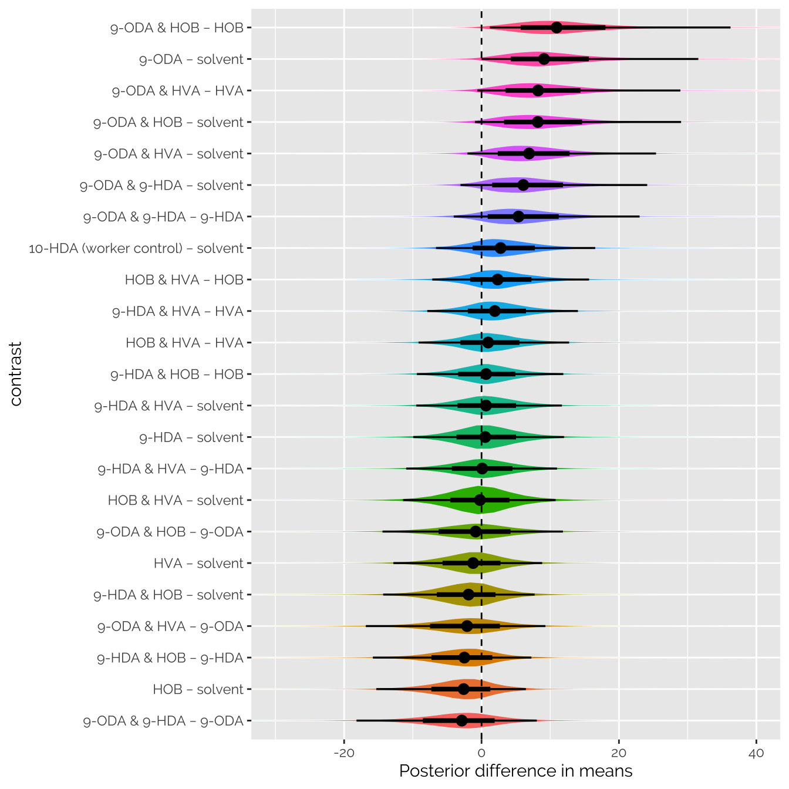
The table shows summary statistics about the posterior distribution of the contrasts shown in the previous figure.
contrast_table_touches %>%
kable() %>% kable_styling(full_width = FALSE)| Contrast | Estimate | Est.Error | Q2.5 | Q97.5 | p | |
|---|---|---|---|---|---|---|
| 9-ODA & HOB − HOB | 13.1824741 | 16.631736 | 1.2170049 | 36.240666 | 0.0095000 | ** |
| 9-ODA − solvent | 10.8329918 | 11.467984 | 0.0105105 | 31.552261 | 0.0249375 | * |
| 9-ODA & HVA − HVA | 9.9975224 | 15.108189 | -0.5996608 | 28.942892 | 0.0350000 | * |
| 9-ODA & HOB − solvent | 9.7891060 | 11.229741 | -0.9564359 | 29.041064 | 0.0393125 | * |
| 9-ODA & HVA − solvent | 8.2425817 | 10.315928 | -2.0427147 | 25.392820 | 0.0613750 | ~ |
| 9-ODA & 9-HDA − solvent | 7.2226066 | 9.462643 | -3.0576684 | 24.110101 | 0.0918750 | ~ |
| 9-ODA & 9-HDA − 9-HDA | 6.6480516 | 10.603439 | -4.0441533 | 23.007463 | 0.1213750 | |
| 10-HDA (worker control) − solvent | 3.4018825 | 7.694646 | -6.6292884 | 16.546903 | 0.2541875 | |
| HOB & HVA − HOB | 2.9901475 | 8.542916 | -7.1630121 | 15.653454 | 0.2846250 | |
| 9-HDA & HVA − HVA | 2.4463610 | 8.611196 | -7.8947775 | 14.029115 | 0.3174375 | |
| HOB & HVA − HVA | 1.3517202 | 8.272499 | -9.1628760 | 12.741782 | 0.4022500 | |
| 9-HDA & HOB − HOB | 0.8708371 | 7.209019 | -9.4190395 | 11.899293 | 0.4303750 | |
| 9-HDA & HVA − solvent | 0.6914204 | 8.582533 | -9.4992526 | 11.694957 | 0.4326250 | |
| 9-HDA − solvent | 0.5745550 | 10.074785 | -9.9283188 | 12.005914 | 0.4471250 | |
| 9-HDA & HVA − 9-HDA | 0.1168653 | 8.742964 | -10.9670959 | 10.980334 | 0.4904375 | |
| HOB & HVA − solvent | -0.4032205 | 11.268354 | -11.4239295 | 10.782268 | 0.4768750 | |
| 9-ODA & HOB − 9-ODA | -1.0438857 | 8.376842 | -14.4105048 | 11.842190 | 0.4310625 | |
| HVA − solvent | -1.7549407 | 11.545602 | -12.8328466 | 8.823565 | 0.3773125 | |
| 9-HDA & HOB − solvent | -2.5225309 | 10.999914 | -14.3149738 | 7.729236 | 0.3192500 | |
| 9-ODA & HVA − 9-ODA | -2.5904100 | 9.346640 | -16.8464136 | 9.294188 | 0.3323125 | |
| 9-HDA & HOB − 9-HDA | -3.0970860 | 8.200831 | -15.8225249 | 7.249153 | 0.2773750 | |
| HOB − solvent | -3.3933680 | 11.009384 | -15.3147760 | 6.450747 | 0.2628750 | |
| 9-ODA & 9-HDA − 9-ODA | -3.6103851 | 9.329677 | -18.1968033 | 8.040393 | 0.2773125 |
We also wrote the following in the pre-registered plan for the analysis:
Secondly, we will test for non-additive effects such as synergy among the pheromone components, by evaluating the following null hypothesis: \(d_{1,2} = d_1 + d_2\), where \(d_1\) is the estimated effect of pheromone 1 on the response variable, \(d_2\) is the estimated effect of pheromone 2, and \(d_{1,2}\) is the effect of the mixture of both pheromones. The effect sizes will each be expressed as the posterior difference in means relative to the control. For example, if both individual pheromones had a positive effect on the response variable individually, and the pair of pheromones had an effect size greater than the sum of their individual effects, we would call that pair of pheromones synergistic. If the effect of the pair was less than the sum of the two individual effects, the pheromones could be said to interfere with one another.
We here calculate the posterior estimate of the “synergy score”, \(d_{1,2} - d_1 + d_2\). When there is good evidence for the synergy, the posterior distribution should not overlap zero, which is not the case for any of the two-component mixtures that we examined.
synergy_plot <- function(df, lims){
df %>%
select(contains("solvent")) %>%
rename_all(~ str_remove_all(.x, " − solvent")) %>%
rename_all(~ str_remove_all(.x, "treatment")) %>%
rename_all(~ str_remove_all(.x, "M")) %>%
mutate(sum_HOB_HVA = HOB + HVA,
sum_9HDA_HOB = `9-HDA` + HOB,
sum_9HDA_HVA = `9-HDA` + HVA,
sum_9ODA_HOB = `9-ODA` + HOB,
sum_9ODA_HVA = `9-ODA` + HVA,
sum_9ODA_9HDA = `9-ODA` + `9-HDA`) %>%
mutate(syn_HOB_HVA = `HOB & HVA` - sum_HOB_HVA,
syn_9HDA_HOB = `9-HDA & HOB` - sum_9HDA_HOB,
syn_9HDA_HVA = `9-HDA & HVA` - sum_9HDA_HVA,
syn_9ODA_HOB = `9-ODA & HOB` - sum_9ODA_HOB,
syn_9ODA_HVA = `9-ODA & HVA` - sum_9ODA_HVA,
syn_9ODA_9HDA = `9-ODA & 9-HDA` - sum_9ODA_9HDA) %>%
select(starts_with("syn")) %>%
rename_all(~ str_remove_all(.x, "syn_")) %>%
rename_all(~ str_replace_all(.x, "_", " & ")) %>%
rename_all(~ str_replace_all(.x, "9", "9-")) %>%
gather() %>%
ggplot(aes(value, key, fill = key)) +
geom_vline(xintercept = 0, linetype = 2) +
stat_halfeyeh(alpha = 0.8) +
scale_fill_viridis_d(option = "B") +
coord_cartesian(xlim = lims) + ylab("Pheromone pair") + xlab("Synergy score") +
theme_bw() +
theme(legend.position = "none",
text = element_text(family = nice_font))
}
contrasts_n_touches %>% synergy_plot(c(-50, 50))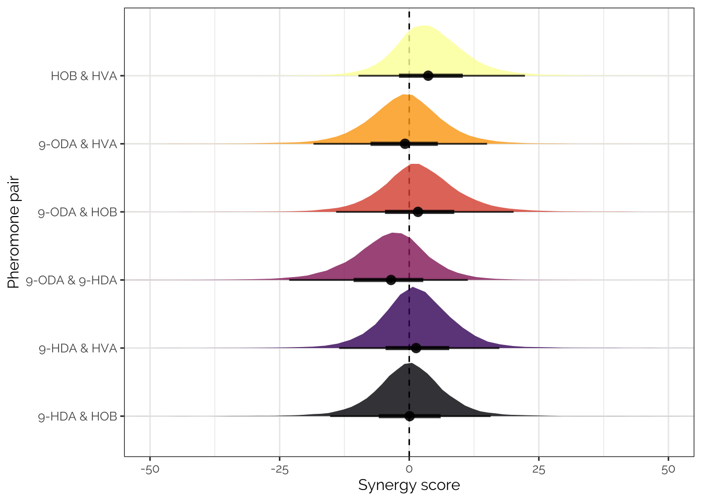
duration_touchesThe response variable is highly non-Normal, though a log transformation produces an approximately Normal distribution. We therefore chose to analyse these data with the lognormal family in brms, which is designed for variables for which a log transformation makes the distribution approximately Normal. We also tested a model using the gamma family, but this model provided a worse fit than the lognormal model as ranked by leave-one-out cross validation (not shown).
grid.arrange(
ggplot(data_by_petri_dish, aes(duration_touches)) +
geom_histogram(bins = 50, colour = "grey20", fill = "#f69256") +
xlab("Total duration of contacts with lure"),
ggplot(data_by_petri_dish, aes(duration_touches)) +
geom_histogram(bins = 50, colour = "grey20", fill = "#f69256") +
scale_x_log10() +
xlab("Total duration of contacts with lure (log10 scale)")
)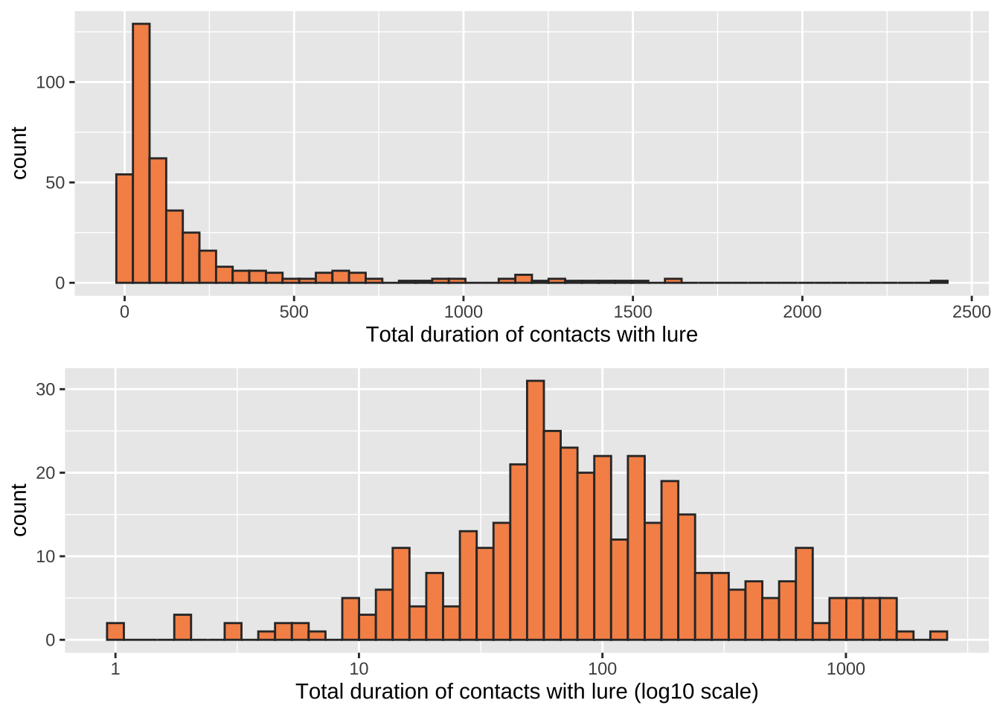
The predictors and priors in the Bayesian GLMM are the same as before, with one one difference: the predictor hive has been treated as a fixed effect (not random), because the model did not sample properly when hive was modeled as a random effect. Random effects are sometimes difficult to fit when there are few levels (here, there are only 3 hives), and the usual solution is to use a fixed effect.
if(!file.exists("output/pre_reg_model.rds")){
duration_model <- brm(
formula = duration_touches ~ treatment + (1 | block) + hive,
family = "lognormal",
chains = 4, cores = 1, iter = 8000,
control = list(adapt_delta = 0.9, max_treedepth = 14),
prior = priors,
data = data_by_petri_dish)
saveRDS(duration_model, file = "output/duration_model.rds")
}
duration_model <- readRDS("output/duration_model.rds")We first perform a “posterior predictive check” on the models. The thick line shows the distribution of the real data, and the 10 thin blue lines show the distribution of fitted values for 10 random draws from the posterior. The fitted values follow the original data quite well, which is a necessary condition for a model to produce reliable inferences.
pp_check(duration_model, nsamples = 10) + scale_x_log10() +
labs(y = "Density", x = "Total duration of contact with pheromone lure (s)")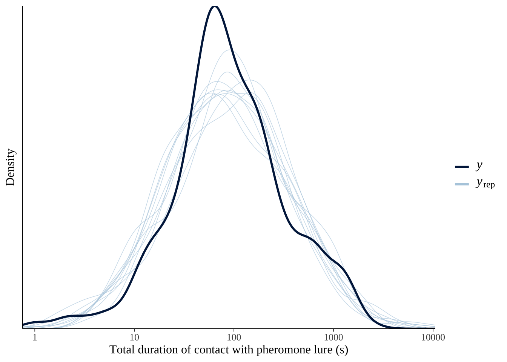
Here is the complete output from the summary() method for the models fitted with brms. The summary() shows the random effects, which were omitted from the previous table.
brmsHere is the complete output from the summary() method for the models fitted with brms.
summary(duration_model) Family: lognormal
Links: mu = identity; sigma = identity
Formula: duration_touches ~ treatment + (1 | block) + hive
Data: summary_data (Number of observations: 392)
Samples: 4 chains, each with iter = 8000; warmup = 4000; thin = 1;
total post-warmup samples = 16000
Group-Level Effects:
~block (Number of levels: 35)
Estimate Est.Error l-95% CI u-95% CI Rhat Bulk_ESS Tail_ESS
sd(Intercept) 0.43 0.10 0.25 0.63 1.00 6809 9052
Population-Level Effects:
Estimate Est.Error l-95% CI u-95% CI Rhat Bulk_ESS
Intercept 3.71 0.24 3.24 4.18 1.00 5790
treatment10MHDAworkercontrol 0.05 0.28 -0.50 0.60 1.00 8037
treatmentHOB -0.11 0.29 -0.67 0.45 1.00 8188
treatmentHVA 0.13 0.28 -0.42 0.68 1.00 7795
treatment9MHDA -0.01 0.28 -0.56 0.54 1.00 7683
treatment9MODA 0.80 0.28 0.27 1.35 1.00 7488
treatmentHOBandHVA 0.11 0.28 -0.45 0.66 1.00 7985
treatment9MHDAandHOB -0.05 0.28 -0.62 0.50 1.00 8101
treatment9MHDAandHVA 0.59 0.28 0.05 1.13 1.00 7536
treatment9MODAandHOB 1.01 0.28 0.47 1.57 1.00 7897
treatment9MODAandHVA 0.87 0.28 0.33 1.41 1.00 7776
treatment9MODAand9MHDA 0.59 0.28 0.04 1.14 1.00 8139
hiveSkylab 0.67 0.24 0.19 1.14 1.00 9436
hiveZoology 0.68 0.22 0.23 1.11 1.00 9886
Tail_ESS
Intercept 9071
treatment10MHDAworkercontrol 11101
treatmentHOB 10249
treatmentHVA 10984
treatment9MHDA 10102
treatment9MODA 10923
treatmentHOBandHVA 10710
treatment9MHDAandHOB 10463
treatment9MHDAandHVA 11080
treatment9MODAandHOB 11192
treatment9MODAandHVA 10352
treatment9MODAand9MHDA 10136
hiveSkylab 11198
hiveZoology 11285
Family Specific Parameters:
Estimate Est.Error l-95% CI u-95% CI Rhat Bulk_ESS Tail_ESS
sigma 1.17 0.04 1.08 1.26 1.00 20094 11978
Samples were drawn using sampling(NUTS). For each parameter, Bulk_ESS
and Tail_ESS are effective sample size measures, and Rhat is the potential
scale reduction factor on split chains (at convergence, Rhat = 1).
Table SXXX: Treatment effects on the total duration of contact with pheromone lure (in seconds) observed over 30 minutes. The table shows the fixed effects parameter estimates from a Bayesian mixed model with negative binomial errors, and hive and experimental block as random effects. Columns 2-5 show the median, error, and 95% credible intervals of the posterior distribution, while the p column shows 1 minus the “probability of direction” (i.e. the probability that the true effect size has the same sign as the estimated effect size).
pvalues <- as.data.frame(p_direction(duration_model)) %>%
mutate(Parameter = str_remove_all(Parameter, "b_"),
Parameter = str_replace_all(Parameter, "[.]", ":"),
p = 1- pd) %>% select(Parameter, p) %>% distinct()
fixed_effects <- fixef(duration_model) %>%
as.data.frame() %>%
rownames_to_column("Parameter") %>%
mutate(old_names = Parameter) %>%
left_join(pvalues, by = "Parameter") %>%
mutate(` ` = ifelse(p < 0.05, "\\*", ""),
` ` = replace(` `, p > 0.05 & p < 0.1, "~"),
` ` = replace(` `, p < 0.01, "**"),
` ` = replace(` `, p < 0.001, "***"),
Parameter = str_replace_all(Parameter, "Pheromone_treatment", ""),
Parameter = str_replace_all(Parameter, "M", "-"),
Parameter = str_replace_all(Parameter, "and", " and "),
Parameter = str_replace_all(Parameter, "workercontrol", " (worker control)"),
Parameter = str_replace_all(Parameter, "treatment", "Treatment: ")) %>%
mutate_at(vars(-Parameter, - ` `, - old_names), ~ round(.x, 3))
fixed_effects %>% select(-old_names) %>%
mutate(Parameter = str_replace_all(Parameter, "and", "&")) %>%
kable() %>% kable_styling(full_width = FALSE)| Parameter | Estimate | Est.Error | Q2.5 | Q97.5 | p | |
|---|---|---|---|---|---|---|
| Intercept | 3.711 | 0.242 | 3.235 | 4.185 | 0.000 | *** |
| Treatment: 10-HDA (worker control) | 0.052 | 0.279 | -0.498 | 0.604 | 0.428 | |
| Treatment: HOB | -0.106 | 0.286 | -0.666 | 0.455 | 0.355 | |
| Treatment: HVA | 0.131 | 0.280 | -0.421 | 0.677 | 0.321 | |
| Treatment: 9-HDA | -0.013 | 0.281 | -0.563 | 0.538 | 0.479 | |
| Treatment: 9-ODA | 0.801 | 0.277 | 0.266 | 1.350 | 0.002 | ** |
| Treatment: HOB & HVA | 0.108 | 0.283 | -0.447 | 0.664 | 0.351 | |
| Treatment: 9-HDA & HOB | -0.052 | 0.285 | -0.623 | 0.502 | 0.433 | |
| Treatment: 9-HDA & HVA | 0.587 | 0.277 | 0.049 | 1.127 | 0.017 | * |
| Treatment: 9-ODA & HOB | 1.014 | 0.282 | 0.470 | 1.572 | 0.000 | *** |
| Treatment: 9-ODA & HVA | 0.867 | 0.277 | 0.327 | 1.407 | 0.001 | ** |
| Treatment: 9-ODA & 9-HDA | 0.590 | 0.282 | 0.037 | 1.140 | 0.019 | * |
| hiveSkylab | 0.672 | 0.242 | 0.191 | 1.144 | 0.003 | ** |
| hiveZoology | 0.676 | 0.221 | 0.233 | 1.114 | 0.002 | ** |
duration_model %>% plot_model()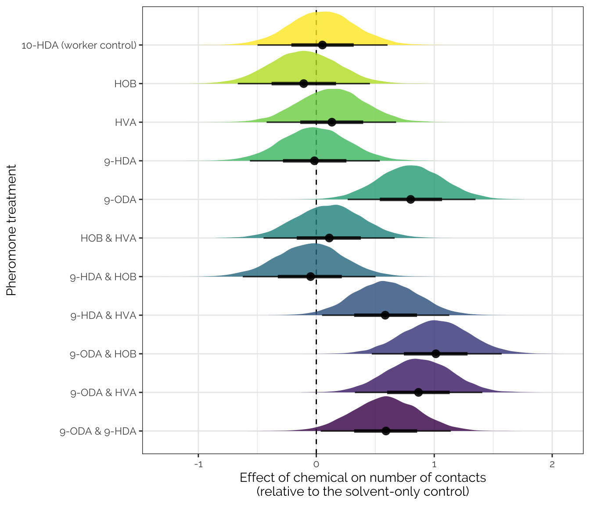
As before, we calculate contrasts comparing the mean of the response variable in several pairs of treatments (i.e. we compute contrasts).
contrasts_duration <- as.data.frame(
fitted(duration_model,
newdata = new %>% mutate(hive = "Skylab"),
re_formula = NA, summary = FALSE)) %>%
mutate(draw = 1:n()) %>%
as_tibble() %>%
gather(para, n_touches, -draw) %>%
left_join(new, by = "para") %>%
select(draw, treatment, n_touches) %>%
spread(treatment, n_touches) %>%
mutate(
`HOB & HVA − HOB` = `HOB and HVA` - HOB,
`HOB & HVA − HVA` = `HOB and HVA` - HVA,
`9-HDA & HOB − 9-HDA` = `9-HDA and HOB` - `9-HDA`,
`9-HDA & HOB − HOB` = `9-HDA and HOB` - HOB,
`9-HDA & HVA − 9-HDA` = `9-HDA and HVA` - `9-HDA`,
`9-HDA & HVA − HVA` = `9-HDA and HVA` - HVA,
`9-ODA & HOB − 9-ODA` = `9-ODA and HOB` - `9-ODA`,
`9-ODA & HOB − HOB` = `9-ODA and HOB` - HOB,
`9-ODA & HVA − 9-ODA` = `9-ODA and HVA` - `9-ODA`,
`9-ODA & HVA − HVA` = `9-ODA and HVA` - HVA,
`9-ODA & 9-HDA − 9-ODA` = `9-ODA and 9-HDA` - `9-ODA`,
`9-ODA & 9-HDA − 9-HDA` = `9-ODA and 9-HDA` - `9-HDA`,
`10-HDA (worker control) − solvent` = `10-HDA (worker control)` - `Solvent control`,
`HOB − solvent` = HOB - `Solvent control`,
`HVA − solvent` = HVA - `Solvent control`,
`9-HDA − solvent` = `9-HDA` - `Solvent control`,
`9-ODA − solvent` = `9-ODA` - `Solvent control`,
`HOB & HVA − solvent` = `HOB and HVA` - `Solvent control`,
`9-HDA & HOB − solvent` = `9-HDA and HOB` - `Solvent control`,
`9-HDA & HVA − solvent` = `9-HDA and HVA` - `Solvent control`,
`9-ODA & HOB − solvent` = `9-ODA and HOB` - `Solvent control`,
`9-ODA & HVA − solvent` = `9-ODA and HVA` - `Solvent control`,
`9-ODA & 9-HDA − solvent` = `9-ODA and 9-HDA` - `Solvent control`
) %>% select(draw, contains("−"))
contrast_table_duration <- left_join(
contrasts_duration[,-1] %>%
summarise_all(~ list(as.data.frame(posterior_summary(.x)))) %>%
gather(Contrast, value) %>% unnest(value),
contrasts_duration[,-1] %>%
summarise_all(~ get_p(.x)) %>%
gather(Contrast, p) %>% unnest(p), by = "Contrast") %>%
mutate(` ` = ifelse(p < 0.05, "\\*", ""),
` ` = replace(` `, p > 0.05 & p < 0.1, "~"),
` ` = replace(` `, p < 0.01, "**"),
` ` = replace(` `, p < 0.001, "***")) %>%
arrange(-Estimate)
contrasts_duration %>%
gather(contrast, difference, -draw) %>%
mutate(contrast = factor(contrast, rev(contrast_table_duration$Contrast))) %>%
ggplot(aes(difference, contrast, fill = contrast)) +
stat_eyeh() +
geom_vline(xintercept = 0, linetype = 2) +
coord_cartesian(xlim = c(-400, 700)) +
theme(legend.position = "none",
text = element_text(family = nice_font)) +
xlab("Posterior difference in means")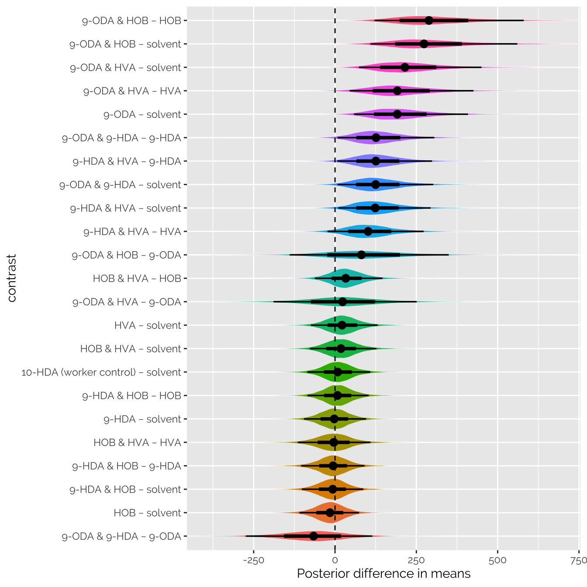
The table shows summary statistics about the posterior distribution of the contrasts shown in the previous figure.
contrast_table_duration %>%
kable() %>% kable_styling(full_width = FALSE)| Contrast | Estimate | Est.Error | Q2.5 | Q97.5 | p | |
|---|---|---|---|---|---|---|
| 9-ODA & HOB − HOB | 305.401336 | 117.35967 | 121.676478 | 580.14272 | 0.0000000 | *** |
| 9-ODA & HOB − solvent | 289.299968 | 115.56083 | 109.099712 | 560.36668 | 0.0001250 | *** |
| 9-ODA & HVA − solvent | 226.811673 | 96.66107 | 73.647014 | 450.47142 | 0.0011250 | ** |
| 9-ODA & HVA − HVA | 203.586605 | 97.77973 | 44.976866 | 425.64088 | 0.0054375 | ** |
| 9-ODA − solvent | 201.740992 | 89.39418 | 58.441466 | 409.05476 | 0.0019375 | ** |
| 9-ODA & 9-HDA − 9-HDA | 134.059221 | 75.55537 | 7.467169 | 305.31225 | 0.0171875 | * |
| 9-HDA & HVA − 9-HDA | 132.645633 | 73.65231 | 6.847004 | 298.30151 | 0.0191250 | * |
| 9-ODA & 9-HDA − solvent | 132.312921 | 74.71412 | 7.603115 | 302.08281 | 0.0185625 | * |
| 9-HDA & HVA − solvent | 130.899333 | 72.29459 | 9.895437 | 293.87672 | 0.0167500 | * |
| 9-HDA & HVA − HVA | 107.674264 | 74.31197 | -23.129654 | 272.55683 | 0.0564375 | ~ |
| 9-ODA & HOB − 9-ODA | 87.558976 | 123.92875 | -139.290655 | 349.55224 | 0.2348750 | |
| HOB & HVA − HOB | 35.382799 | 51.84851 | -61.988609 | 145.98982 | 0.2373125 | |
| 9-ODA & HVA − 9-ODA | 25.070681 | 109.67681 | -189.062327 | 251.06402 | 0.4043750 | |
| HVA − solvent | 23.225068 | 51.20416 | -74.219327 | 131.25804 | 0.3207500 | |
| HOB & HVA − solvent | 19.281432 | 51.24757 | -77.527702 | 127.08564 | 0.3506250 | |
| 10-HDA (worker control) − solvent | 9.049404 | 48.83096 | -85.014638 | 108.50005 | 0.4276875 | |
| 9-HDA & HOB − HOB | 8.248556 | 47.18666 | -84.230109 | 103.55266 | 0.4313125 | |
| 9-HDA − solvent | -1.746300 | 47.34934 | -94.873430 | 95.39672 | 0.4790625 | |
| HOB & HVA − HVA | -3.943637 | 55.60278 | -114.566653 | 108.90620 | 0.4704375 | |
| 9-HDA & HOB − 9-HDA | -6.106511 | 48.46027 | -104.340826 | 90.91346 | 0.4445625 | |
| 9-HDA & HOB − solvent | -7.852811 | 47.07644 | -101.902427 | 86.60676 | 0.4331875 | |
| HOB − solvent | -16.101368 | 46.19392 | -109.513599 | 74.02681 | 0.3552500 | |
| 9-ODA & 9-HDA − 9-ODA | -69.428072 | 97.91966 | -274.514056 | 114.74205 | 0.2298750 |
We again calculate the posterior estimate of the “synergy score”, \(d_{1,2} - d_1 + d_2\). As before, the posterior distribution overlaps zero for every pair of chemicals, meaning that there is no strong evidence that any of the two-chemical mixtures have synergistic effects on the duration of contact with the lure.
contrasts_duration %>% synergy_plot(c(-500, 500))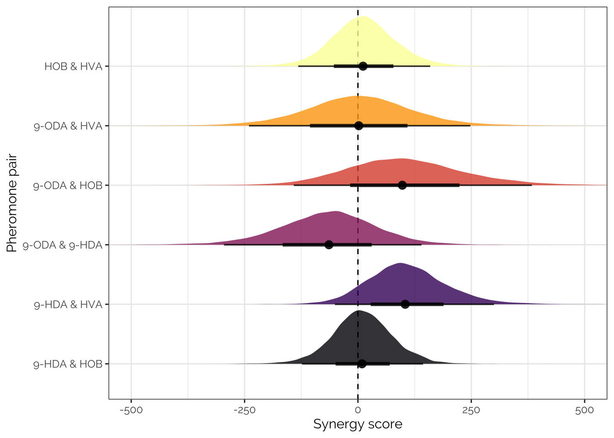
# Transcribe the treatment group means and SE from the table in Slessor et al. 1988
slessor <- tibble(
study = "slessor",
mean = c(24.7, 17.1, 13.1, 6.1, 6.7, 3.4, 7.6, 9, 4.3, 3.5, 3.5, 3.9, 6.1, 4.7, 3.5, 2.9, 1.3),
SE = c(3.3, 3.4, 2.3, 1.3, 1.7, .6, 1.1, 1.8, 1.1, 1, .6, .7, 1.3, .9, 1.3, .7, .4),
n = 17,
treatment = c("Queen extract", "9-ODA, 9-HDA, HOB, HVA",
"9-ODA, HOB, HVA", "9-HDA, HOB, HVA",
"9-ODA, 9-HDA, HOB", "9-ODA, 9-HDA, HVA",
"HOB & HVA", "9-ODA & HOB", "9-ODA & HVA",
"9-ODA & 9-HDA", "9-HDA & HOB", "9-HDA & HVA",
"9-ODA", "HVA", "9-HDA", "HOB", "Solvent control")
)
slessor_levels <- slessor %>%
arrange(mean) %>% pull(treatment)
barplot_data <- slessor %>%
arrange(mean) %>%
mutate(study = " Slessor et al. 1988") %>%
bind_rows(data_by_petri_dish %>%
filter(treatment != "10-HDA (worker control)") %>%
group_by(treatment) %>%
summarise(mean = mean(duration_touches),
SE = sd(duration_touches) / sqrt(n()),
.groups = "drop") %>%
mutate(study = "Present study", n = NA,
treatment = str_replace_all(as.character(treatment), "and", "&")) %>%
select(study, mean, SE, n, treatment)) %>%
filter(treatment %in% levels_ampersand) %>%
# filter(study != "Our study") %>%
mutate(treatment = factor(treatment, slessor_levels))
comparison_barplot <- barplot_data %>%
ggplot(aes(treatment, mean, fill = treatment)) +
geom_errorbar(aes(ymin = mean-SE, ymax=mean+SE), width = 0.3) +
geom_bar(stat="identity", colour = "black") + coord_flip() +
scale_fill_viridis_d(direction = -1) +
theme(legend.position = "none",
text = element_text(family = nice_font)) +
ylab("Mean + SE retinue response") +
xlab("Treatment") +
facet_wrap(~study, scales = "free_x") +
theme_bw() +
theme(legend.position = "none",
text = element_text(family = nice_font),
strip.background = element_blank())
correlation_data <- slessor %>%
select(treatment, mean, SE, study) %>%
bind_rows(data_by_petri_dish %>%
group_by(treatment) %>%
summarise(mean = mean(duration_touches),
SE = sd(duration_touches) / sqrt(n()),
.groups = "drop") %>%
mutate(study = "us",
treatment = str_replace_all(as.character(treatment), "and", "&"))) %>%
filter(treatment %in% unique(barplot_data$treatment)) %>%
group_by(study, treatment) %>%
nest() %>%
spread(study, data) %>%
unnest(slessor) %>% rename(slessor_mean = mean, slessor_SE = SE) %>%
unnest(us) %>% rename(our_mean = mean, our_SE = SE) %>%
mutate(treatment = factor(treatment, levels(barplot_data$treatment)))
comparison_scatter <- correlation_data %>%
ggplot(aes(x = slessor_mean, y = our_mean)) +
stat_smooth(method = "lm", colour = "grey20", formula = "y ~ x", size = 0.7, aes(weight = our_SE)) +
geom_errorbar(aes(ymin = our_mean - our_SE, ymax = our_mean + our_SE), size = 0.25, width = 0, colour = "grey20") +
geom_errorbarh(aes(xmin = slessor_mean - slessor_SE, xmax = slessor_mean + slessor_SE), size = 0.25, height = 0, colour = "grey20") +
geom_point(pch = 21, aes(fill = treatment)) +
scale_fill_viridis_d(direction = -1) +
geom_text_repel(aes(label = treatment), colour = "black", size = 3, family = nice_font) +
ylab("Mean retinue response \u00B1 SE\n(present study)") +
xlab("Mean retinue response \u00B1 SE (Slessor et al. 1988)") +
theme_bw() +
theme(legend.position = "none",
text = element_text(family = nice_font))
composite_plot <- plot_grid(comparison_barplot, comparison_scatter, nrow = 2, align = 'v', axis = 'l')
ggsave(filename = "figures/fig3.pdf",
composite_plot, width = 5, height = 6)
composite_plot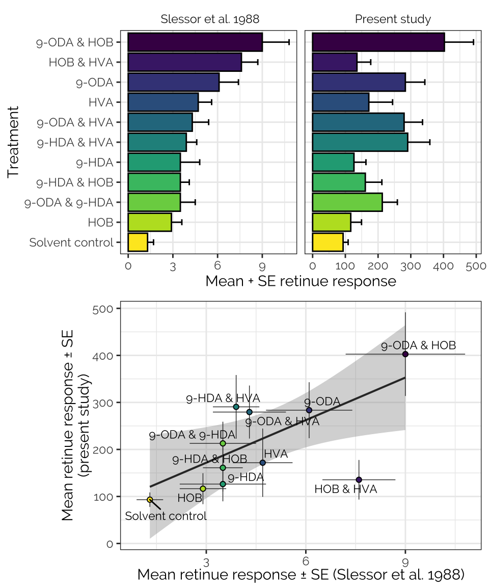
cor.test(correlation_data$our_mean,
correlation_data$slessor_mean, method = "spearman")
Spearman's rank correlation rho
data: correlation_data$our_mean and correlation_data$slessor_mean
S = 68.617, p-value = 0.01925
alternative hypothesis: true rho is not equal to 0
sample estimates:
rho
0.6881024
sessionInfo()R version 4.0.3 (2020-10-10) Platform: x86_64-apple-darwin17.0 (64-bit) Running under: macOS Catalina 10.15.7 Matrix products: default BLAS: /Library/Frameworks/R.framework/Versions/4.0/Resources/lib/libRblas.dylib LAPACK: /Library/Frameworks/R.framework/Versions/4.0/Resources/lib/libRlapack.dylib locale: [1] en_GB.UTF-8/en_GB.UTF-8/en_GB.UTF-8/C/en_GB.UTF-8/en_GB.UTF-8 attached base packages: [1] stats graphics grDevices utils datasets methods base other attached packages: [1] cowplot_1.0.0 ggrepel_0.8.2 knitrhooks_0.0.4 knitr_1.32 [5] bayestestR_0.6.0 kableExtra_1.3.4 gridExtra_2.3 brms_2.14.4 [9] Rcpp_1.0.4.6 tidybayes_2.0.3 ggbeeswarm_0.6.0 forcats_0.5.0 [13] stringr_1.4.0 dplyr_1.0.0 purrr_0.3.4 readr_1.3.1 [17] tidyr_1.1.0 tibble_3.0.1 ggplot2_3.3.2 tidyverse_1.3.0 [21] showtext_0.9-2 showtextdb_3.0 sysfonts_0.8.3 loaded via a namespace (and not attached): [1] readxl_1.3.1 backports_1.1.7 workflowr_1.6.2 [4] systemfonts_0.2.2 plyr_1.8.6 igraph_1.2.5 [7] splines_4.0.3 svUnit_1.0.3 crosstalk_1.1.0.1 [10] TH.data_1.0-10 rstantools_2.1.1 inline_0.3.15 [13] digest_0.6.25 htmltools_0.5.0 rsconnect_0.8.16 [16] fansi_0.4.1 magrittr_2.0.1 modelr_0.1.8 [19] RcppParallel_5.0.1 matrixStats_0.56.0 svglite_1.2.3 [22] sandwich_2.5-1 xts_0.12-0 prettyunits_1.1.1 [25] colorspace_1.4-1 blob_1.2.1 rvest_0.3.5 [28] haven_2.3.1 xfun_0.22 callr_3.4.3 [31] crayon_1.3.4 jsonlite_1.7.0 lme4_1.1-23 [34] survival_3.2-7 zoo_1.8-8 glue_1.4.2 [37] gtable_0.3.0 emmeans_1.4.7 webshot_0.5.2 [40] V8_3.4.0 pkgbuild_1.0.8 rstan_2.21.2 [43] abind_1.4-5 scales_1.1.1 mvtnorm_1.1-0 [46] DBI_1.1.0 miniUI_0.1.1.1 viridisLite_0.3.0 [49] xtable_1.8-4 stats4_4.0.3 StanHeaders_2.21.0-3 [52] DT_0.13 htmlwidgets_1.5.1 httr_1.4.1 [55] threejs_0.3.3 arrayhelpers_1.1-0 ellipsis_0.3.1 [58] farver_2.0.3 pkgconfig_2.0.3 loo_2.3.1 [61] dbplyr_1.4.4 labeling_0.3 tidyselect_1.1.0 [64] rlang_0.4.6 reshape2_1.4.4 later_1.0.0 [67] munsell_0.5.0 cellranger_1.1.0 tools_4.0.3 [70] cli_2.0.2 generics_0.0.2 broom_0.5.6 [73] ggridges_0.5.2 evaluate_0.14 fastmap_1.0.1 [76] yaml_2.2.1 processx_3.4.2 fs_1.4.1 [79] nlme_3.1-149 mime_0.9 projpred_2.0.2 [82] xml2_1.3.2 compiler_4.0.3 bayesplot_1.7.2 [85] shinythemes_1.1.2 rstudioapi_0.11 beeswarm_0.2.3 [88] gamm4_0.2-6 curl_4.3 reprex_0.3.0 [91] statmod_1.4.34 stringi_1.5.3 highr_0.8 [94] ps_1.3.3 Brobdingnag_1.2-6 gdtools_0.2.2 [97] lattice_0.20-41 Matrix_1.2-18 nloptr_1.2.2.1 [100] markdown_1.1 shinyjs_1.1 vctrs_0.3.0 [103] pillar_1.4.4 lifecycle_0.2.0 bridgesampling_1.0-0 [106] estimability_1.3 insight_0.8.4 httpuv_1.5.3.1 [109] R6_2.4.1 promises_1.1.0 vipor_0.4.5 [112] codetools_0.2-16 boot_1.3-25 colourpicker_1.0 [115] MASS_7.3-53 gtools_3.8.2 assertthat_0.2.1 [118] rprojroot_1.3-2 withr_2.2.0 shinystan_2.5.0 [121] multcomp_1.4-13 mgcv_1.8-33 parallel_4.0.3 [124] hms_0.5.3 grid_4.0.3 coda_0.19-3 [127] minqa_1.2.4 rmarkdown_2.5 git2r_0.27.1 [130] shiny_1.4.0.2 lubridate_1.7.8 base64enc_0.1-3 [133] dygraphs_1.1.1.6